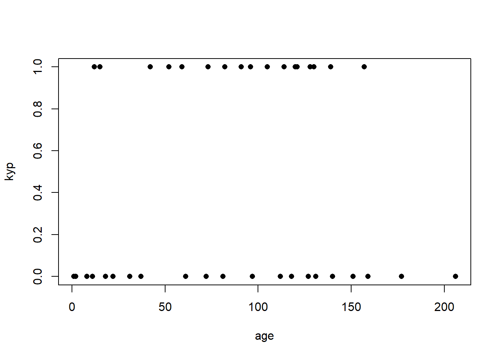
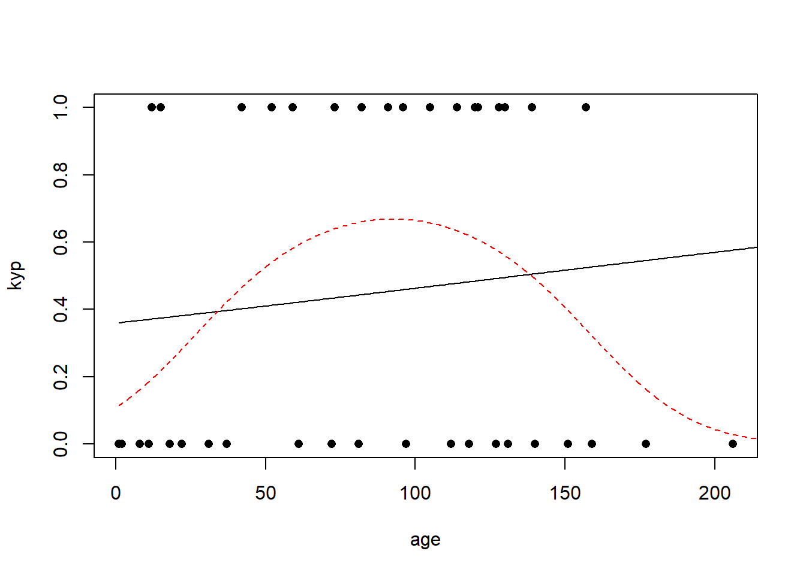
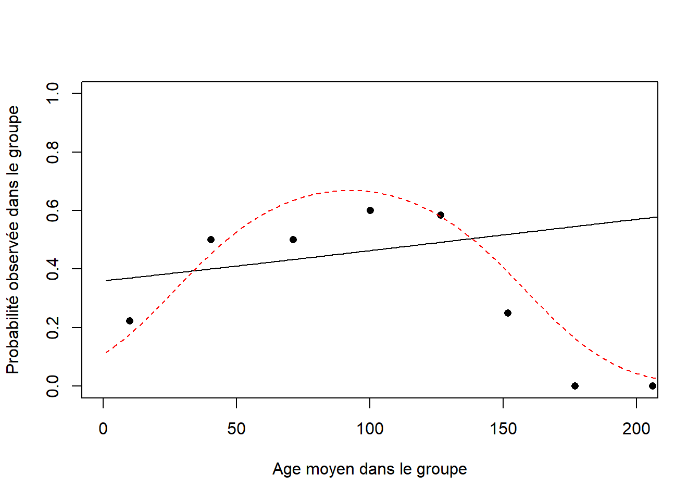

Code
library(knitr)library(knitr)Jones & Parker (2010) ont écrit un article sur les contributions des joueurs étoiles de la NBA. Entre autres, ils ont donné des équations de prévision pour la probabilité \(\pi\) de victoire pour un match de LeBron James dans la saison 2008-2009. Les variables exogènes sont :
\(x_1\) : Points produits par centaine de possessions (note offensive).
\(x_2\) : Points donnés par centaine de possessions (note défensive), plus petit signifie “meilleur” dans ce cas.
\(x_3\) : Vaut 1 si la partie est discutée à domicile (0 sinon).
Les coefficients estimés sont
\[ \hat{\beta}_0=1.379, \quad ~ \hat{\beta}_1=0.119,\quad ~ \hat{\beta}_2=-0.139,\quad \text{ et}\quad ~ \hat{\beta}_3=3.393. \]
a) On a utilisé un lien logistique. Écrire l’équation de la probabilité estimée \(\hat{\pi}\) en fonction des paramètres du modèle.
b) Calculer la probabilité de gain lorsque la note défensive de LeBron James est égale à sa médiane pour la saison, i.e., \(x_2=99.5\), que la note offensive est à son \(75^{e}\) centile, \(x_1=136.1\) et que \(x_3=0\). Refaire avec le \(25^e\) centile \(x_1=108.7\), comparer et interpréter.
c) Quel est l’impact de la variable \(x_3\)? Utiliser les médianes \(x_1=123.2\) et \(x_2=99.5\).
a)
\[
\mathrm{logit}(\hat{\pi})=1.379+0.119x_1-0.139x_2+3.393x_3 \Rightarrow \hat{\pi}=\frac{\exp(1.379+0.119x_1-0.139x_2+3.393x_3)}{1+\exp(1.379+0.119x_1-0.139x_2+3.393x_3)}
\]
b) Au \(75^e\) centile, on a
\[ \hat{\pi}=\frac{\exp(1.379+0.119\times 136.1-0.139\times 99.5)}{1+\exp(1.379+0.119\times 136.1-0.139\times 99.5)}=97.68\%. \]
Puis, au \(25^e\) centile,
\[ \hat{\pi}=\frac{\exp(1.379+0.119\times 108.7-0.139\times 99.5)}{1+\exp(1.379+0.119\times 108.7-0.139\times 99.5)}=61.86\%. \]
Cela signifie que la probabilité de gain augmente beaucoup lorsque LeBron James est en forme.
c)
À l’étranger, on a \[ \hat{\pi}=\frac{\exp(1.379+0.119\times 123.2-0.139\times 99.5)}{1+\exp(1.379+0.119\times 123.2-0.139\times 99.5)}=90.1\%. \]
À domicile, on a \[ \hat{\pi}=\frac{\exp(1.379+0.119\times 123.2-0.139\times 99.5+3.393)}{1+\exp(1.379+0.119\times 123.2-0.139\times 99.5+3.393)}=99.6\%. \] L’effet de disputer le match à domicile est donc un augmentation de 10.5 % de la probabilité de gain lorsque les notes offensive et défensive de LeBron James sont égales à leur médiane.
Il y a plusieurs moyens de représenter des données binomiales. Elles peuvent être groupées ou non, puisqu’une somme de \(m\) variables aléatoires Bernoulli\((\pi)\) est distribuée comme une variable aléatoire Binomiale\((m,\pi)\). On considère la petite base de données fictive suivante :
x |
Nombre d’essais | Nombre de réussites |
|---|---|---|
| 0 | 4 | 1 |
| 1 | 4 | 2 |
| 2 | 4 | 4 |
a) Ajuster les modèles \[M_0:\mathrm{logit}(\pi)=\beta_0\] et \[M_1:\mathrm{logit}(\pi)=\beta_0+\beta_1 x\] en utilisant les données sous forme groupée (Binomiale).
b) Ajuster les modèles \[M_0:\mathrm{logit}(\pi)=\beta_0\] et \[M_1:\mathrm{logit}(\pi)=\beta_0+\beta_1 x\] en utilisant les données sous forme individuelles (Bernoulli).
c) Comparer les estimations et les écart-types des coefficients, ainsi que les déviances pour les modèles ajustés en a) avec ceux ajustés en b). Commenter.
d) Comparer les log-vraisemblances pour les modèles en a) avec ceux en b). Expliquer pourquoi les estimations des paramètres sont équivalentes.
e) Faire une analyse de déviance pour déterminer si le modèle \(M_0\) est une simplification adéquate du modèle \(M_1\). Obtient-on les mêmes résultats avec les modèles en a) et en b)? Pourquoi?
Les données sous forme groupées sont codées comme suit en R :
x <- 0:2
Success <- c(1,2,4)
Trials <- rep(4,3)alors que les données individuelles sont programmées de la façon suivante :
xv2 <- rep(0:2,each=4)
Successv2 <- c(1,0,0,0,1,1,0,0,1,1,1,1)a) On trouve les résultats suivants :
M0 <- glm(cbind(Success,Trials-Success) ~ 1,binomial)
M1 <- glm(cbind(Success,Trials-Success) ~ x,binomial)
summary(M0)
Call:
glm(formula = cbind(Success, Trials - Success) ~ 1, family = binomial)
Coefficients:
Estimate Std. Error z value Pr(>|z|)
(Intercept) 0.3365 0.5855 0.575 0.566
(Dispersion parameter for binomial family taken to be 1)
Null deviance: 6.2568 on 2 degrees of freedom
Residual deviance: 6.2568 on 2 degrees of freedom
AIC: 11.945
Number of Fisher Scoring iterations: 4summary(M1)
Call:
glm(formula = cbind(Success, Trials - Success) ~ x, family = binomial)
Coefficients:
Estimate Std. Error z value Pr(>|z|)
(Intercept) -1.503 1.181 -1.272 0.2034
x 2.060 1.130 1.823 0.0683 .
---
Signif. codes: 0 '***' 0.001 '**' 0.01 '*' 0.05 '.' 0.1 ' ' 1
(Dispersion parameter for binomial family taken to be 1)
Null deviance: 6.2568 on 2 degrees of freedom
Residual deviance: 0.9844 on 1 degrees of freedom
AIC: 8.6722
Number of Fisher Scoring iterations: 4b) On trouve les résultats suivants :
M0v2 <- glm(Successv2 ~ 1,binomial)
M1v2 <- glm(Successv2 ~ xv2,binomial)
summary(M0v2)
Call:
glm(formula = Successv2 ~ 1, family = binomial)
Coefficients:
Estimate Std. Error z value Pr(>|z|)
(Intercept) 0.3365 0.5855 0.575 0.566
(Dispersion parameter for binomial family taken to be 1)
Null deviance: 16.301 on 11 degrees of freedom
Residual deviance: 16.301 on 11 degrees of freedom
AIC: 18.301
Number of Fisher Scoring iterations: 4summary(M1v2)
Call:
glm(formula = Successv2 ~ xv2, family = binomial)
Coefficients:
Estimate Std. Error z value Pr(>|z|)
(Intercept) -1.503 1.181 -1.272 0.2033
xv2 2.060 1.130 1.823 0.0682 .
---
Signif. codes: 0 '***' 0.001 '**' 0.01 '*' 0.05 '.' 0.1 ' ' 1
(Dispersion parameter for binomial family taken to be 1)
Null deviance: 16.301 on 11 degrees of freedom
Residual deviance: 11.028 on 10 degrees of freedom
AIC: 15.028
Number of Fisher Scoring iterations: 4c) Les estimations des coefficients sont exactement les mêmes pour les deux façons de programmer les données. Cela est attendu. Les écart-types sont également équivalents peu importe si on utilise les données groupées ou non. Par contre, les déviances sont beaucoup plus élevées dans le modèle avec les données individuelles. Cela pourrait être relié au nombre de degrés de liberté, qui est aussi supérieur dans le cas des données individuelles puisqu’on a 12 observations au lieu de 3.
d) L’expression de la log vraisemblance pour un modèle binomial est \[ \begin{aligned} l&=\sum_{i=1}^n y_i \eta_i - m_i \log(1+e^{\eta_i})+\log\begin{pmatrix} m_i\\ y_i\end{pmatrix}. \end{aligned} \]
On voit donc facilement que la différence entre la log-vraisemblance dans le modèle avec données groupées est le terme constant \(\log\begin{pmatrix} m_i\\ y_i\end{pmatrix}\), qui n’est pas présent avec les données Bernoulli. Par conséquent, l’estimation des paramètres est la même dans les deux modèles, puisque lorsque l’on dérive la log-vraisemblance, ce terme constant ne joue aucun rôle.
e) L’analyse de déviance donne exactement le même résultat dans les deux cas. Pour les données Binomiales, on a que \[ \Delta Deviance = 6.2568 - 6.2568 =5.2724 > \chi^2_{95\%}(1),\] alors on rejette l’hypothèse nulle que le modèle nul est une simplification adéquate du modèle incluant la variable exogène \(x\). Pour les données Bernoulli, on a aussi que \[ \Delta Deviance = 16.301 - 11.028 =5.2724 > \chi^2_{95\%}(1).\] Cela montre que la façon d’entrer les données a un impact seulement sur les tests d’adéquation du modèle, pour vérifier la qualité de l’ajustement. En fait, la déviance n’est pas une statistique appropriée pour évaluer la qualité de l’ajustement pour des données Bernoulli.
anova(M0,M1)Analysis of Deviance Table
Model 1: cbind(Success, Trials - Success) ~ 1
Model 2: cbind(Success, Trials - Success) ~ x
Resid. Df Resid. Dev Df Deviance Pr(>Chi)
1 2 6.2568
2 1 0.9844 1 5.2724 0.02167 *
---
Signif. codes: 0 '***' 0.001 '**' 0.01 '*' 0.05 '.' 0.1 ' ' 1anova(M0v2,M1v2)Analysis of Deviance Table
Model 1: Successv2 ~ 1
Model 2: Successv2 ~ xv2
Resid. Df Resid. Dev Df Deviance Pr(>Chi)
1 11 16.301
2 10 11.028 1 5.2724 0.02167 *
---
Signif. codes: 0 '***' 0.001 '**' 0.01 '*' 0.05 '.' 0.1 ' ' 1qchisq(0.95,1)[1] 3.841459Une étude sur une condition de la colonne vertébrale (kyphosis) survenant après une opération a été réalisée par Hastie et Tibshirani (1990). On s’intéresse à l’effet de la variable explicative age (en mois) au moment de l’opération, sur la probabilité d’avoir cette mauvaise condition. Les données peuvent être programmées en R avec les deux commandes suivantes :
age <- c(12,15,42,52,59,73,82,91,96,105,114,120,121,128,130,139,139,157,
1,1,2,8,11,18,22,31,37,61,72,81,97,112,118,127,131,140,151,159,177,206)
kyp <- c(rep(1,18),rep(0,22))a) Ajuster un modèle de régression logistique sur ces données Bernoulli. Effectuer un test de Wald sur l’effet de l’âge et interpréter.
b) Tracer le graphique des données. Que remarquez-vous?
c) Ajouter le carré de l’âge comme variable explicative dans le modèle. Est-ce que l’âge a un impact significatif sur la probabilité d’avoir le “kyphosis” après l’opération?
d) Tracer les courbes des modèles ajustés. Interpréter.
e) Utiliser le critère AIC pour comparer les deux modèles.
a) Le modèle de régression logistique est \(\log\left(\frac{\pi_i}{1-\pi_i}\right)=\eta_i=\beta_0+\beta_1 \times {\mathrm age}\). On trouve les estimations des paramètres en R. Les hypothèses du test de Wald sont
\[ H_0~: \beta_1=0 \text{ versus } H_1~: \beta_1\ne0. \]
La statistique est 0.734 et le seuil observé du test est 46.3 %, ce qui n’est pas significatif. On ne peut donc pas rejeter l’hypothèse nulle que \(\beta_1=0\). Cela signifie qu’il n’y a pas de preuves dans ces données que l’âge a un impact significatif sur la probabilité d’être atteint de kyphosis après une opération.
moda <- glm(kyp ~ age,family=binomial)
summary(moda)
Call:
glm(formula = kyp ~ age, family = binomial)
Coefficients:
Estimate Std. Error z value Pr(>|z|)
(Intercept) -0.572693 0.602395 -0.951 0.342
age 0.004296 0.005849 0.734 0.463
(Dispersion parameter for binomial family taken to be 1)
Null deviance: 55.051 on 39 degrees of freedom
Residual deviance: 54.504 on 38 degrees of freedom
AIC: 58.504
Number of Fisher Scoring iterations: 4b) On trace le graphique des données : plot(age,kyp,pch=16).
Le résultat est montré dans la figure 7.1.

c) Le modèle est maintenant \(\log\left(\frac{\pi_i}{1-\pi_i}\right)=\eta_i=\beta_0+\beta_1 age+\beta_2 age^2\). On trouve les estimations des paramètres en R. Les tests de Wald pour \(\beta_1\) et \(\beta_2\) sont tous deux significatifs à 5 %. On trouve donc que l’âge a un effet significatif sur la probabilité d’être atteint de kyphosis après l’opération.
modb <- glm(kyp~age+I(age^2),family=binomial)
summary(modb)
Call:
glm(formula = kyp ~ age + I(age^2), family = binomial)
Coefficients:
Estimate Std. Error z value Pr(>|z|)
(Intercept) -2.0462547 0.9943478 -2.058 0.0396 *
age 0.0600398 0.0267808 2.242 0.0250 *
I(age^2) -0.0003279 0.0001564 -2.097 0.0360 *
---
Signif. codes: 0 '***' 0.001 '**' 0.01 '*' 0.05 '.' 0.1 ' ' 1
(Dispersion parameter for binomial family taken to be 1)
Null deviance: 55.051 on 39 degrees of freedom
Residual deviance: 48.228 on 37 degrees of freedom
AIC: 54.228
Number of Fisher Scoring iterations: 4d) On trace le graphique des données et on ajoute les courbes de probabilités ajustées. Le résultat est montré dans la figure 7.2. On ne voit pas grand chose d’intéressant, sauf que le modèle en a) semble parfaitement inutile. On peut grouper les données par catégorie d’âge plutôt que de laisser les données individuelles pour mieux voir l’ajustement. Le graphique des données groupées est montré dans la figure 7.3. On observe que le modèle quadratique s’ajuste beaucoup mieux aux données.


e) Le critère AIC est donné dans la sortie R. Le critère AIC pour le modèle c) est 54.228 et est inférieur à celui pour le modèle a), ce qui soutient encore une fois que le modèle avec le terme \(age^2\) est préférable.
Les données contenues dans le fichier skin.txt montrent le nombre de cas de cancer de la peau parmi des femmes à St-Paul, Minnesota et à Forth Worth, Texas. On s’attend normalement à ce que l’exposition au soleil soit plus forte au Texas qu’au Minnesota. Dans les données, la variable town vaut 0 pour St-Paul et 1 pour Forth Worth. On a également la population et le groupe d’âge.
a) Ajuster un modèle de régression logistique town+age pour ces données. Est-ce que les variables sont significatives?
b) A-t-on une indication dans ces données que l’exposition au soleil augmente la probabilité d’être atteinte du cancer de la peau?
c) Comparer les probabilités ajustées (et écarts-types) pour des femmes de 45 ans vivant à St-Paul versus vivant à Fort Worth.
d) Utiliser un modèle de Poisson avec lien canonique, de façon appropriée, pour modéliser ces données. Arrive-t-on aux mêmes conclusions?
a) Le modèle de régression logistique est \(\log\left(\frac{\pi_i}{1-\pi_i}\right)=\eta_i=\beta_0+\beta^{town}+\beta^{age}\). On y va :
skin <- read.table("data/Skin.txt",header=TRUE)
mod1 <- glm(cbind(Cases,Population-Cases) ~ Town+Age,family=binomial,data=skin)
summary(mod1)
Call:
glm(formula = cbind(Cases, Population - Cases) ~ Town + Age,
family = binomial, data = skin)
Coefficients:
Estimate Std. Error z value Pr(>|z|)
(Intercept) -11.69364 0.44923 -26.030 < 2e-16 ***
Town 0.85492 0.05969 14.322 < 2e-16 ***
Age25-34 2.62915 0.46747 5.624 1.86e-08 ***
Age35-44 3.84627 0.45467 8.459 < 2e-16 ***
Age45-54 4.59538 0.45104 10.188 < 2e-16 ***
Age55-64 5.08901 0.45031 11.301 < 2e-16 ***
Age65-74 5.65031 0.44976 12.563 < 2e-16 ***
Age75-84 6.20887 0.45756 13.570 < 2e-16 ***
Age85+ 6.18346 0.45783 13.506 < 2e-16 ***
---
Signif. codes: 0 '***' 0.001 '**' 0.01 '*' 0.05 '.' 0.1 ' ' 1
(Dispersion parameter for binomial family taken to be 1)
Null deviance: 2330.4637 on 14 degrees of freedom
Residual deviance: 5.1509 on 6 degrees of freedom
AIC: 110.1
Number of Fisher Scoring iterations: 4Selon les tests de Wald, tous les paramètres sont hautement significatifs.
b) Oui, le coefficient lié à la variable Town est positif. Cela signifie que d’être à Fort Worth augmente \(\eta_i\), et puisque \(\pi_i=\frac{e^{\eta_i}}{1+e^{\eta_i}}\), cela augmente aussi la probabilité d’avoir le cancer de la peau.
c) Pour la femme vivant à St-Paul, on a \[ \hat{\pi}=\frac{\exp(-11.69364+4.595 38)}{1+\exp(-11.69364+4.59538)}=0.00082586. \]
Pour la femme vivant à Fort Worth, on a \[ \hat{\pi}=\frac{\exp(-11.69364+0.85492+4.59538)}{1+\exp(-11.69364+0.85492+4.59538)}=0.0019396. \]
On trouve donc que la deuxième probabilité est plus élevée que la première. En R, on peut utiliser la fonction predict :
predict(mod1,data.frame(Town=c(0,1),Age=rep("45-54",2)),type="response",se.fit=TRUE) $fit
1 2
0.0008258624 0.0019395844
$se.fit
1 2
6.051739e-05 1.173087e-04
$residual.scale
[1] 1d) On peut utiliser un modèle de Poisson avec un terme offset égal au logarithme de la population. On obtient les mêmes conclusions quant à l’effet de la ville sur la probabilité d’être atteinte du cancer de la peau. Le modèle de Poisson semble adéquat si on se base sur la déviance. Dans ce cas, les populations sont très élevées, alors le modèle de Poisson est une excellente approximation pour le modèle Binomial.
mod2 <- glm(Cases ~ Town+Age+offset(log(Population)),family=poisson,data=skin)
summary(mod2)
Call:
glm(formula = Cases ~ Town + Age + offset(log(Population)), family = poisson,
data = skin)
Coefficients:
Estimate Std. Error z value Pr(>|z|)
(Intercept) -11.69207 0.44922 -26.028 < 2e-16 ***
Town 0.85269 0.05962 14.302 < 2e-16 ***
Age25-34 2.62899 0.46746 5.624 1.87e-08 ***
Age35-44 3.84558 0.45466 8.458 < 2e-16 ***
Age45-54 4.59381 0.45103 10.185 < 2e-16 ***
Age55-64 5.08638 0.45030 11.296 < 2e-16 ***
Age65-74 5.64569 0.44975 12.553 < 2e-16 ***
Age75-84 6.20317 0.45751 13.558 < 2e-16 ***
Age85+ 6.17568 0.45774 13.492 < 2e-16 ***
---
Signif. codes: 0 '***' 0.001 '**' 0.01 '*' 0.05 '.' 0.1 ' ' 1
(Dispersion parameter for poisson family taken to be 1)
Null deviance: 2327.2912 on 14 degrees of freedom
Residual deviance: 5.2089 on 6 degrees of freedom
AIC: 110.19
Number of Fisher Scoring iterations: 4predict(mod2,data.frame(Town=c(0,1),Age=rep("45-54",2),Population=rep(1,2)),type="response",se.fit=TRUE) $fit
1 2
0.0008265387 0.0019390253
$se.fit
1 2
6.055942e-05 1.174031e-04
$residual.scale
[1] 1Soient \(Y_i\sim Bin(m_i,\pi_i),\) pour \(i=1,\ldots,n\) et \(Y_i\bot Y_j\) pour \(i \ne j\). On considère le modèle où \(\pi_1=\cdots=\pi_n=\pi\). On a un échantillon d’observations \(y_1,\ldots,y_n\).
a) Montrer que l’estimateur du maximum de vraisemblance de \(\pi\) est \[\hat{\pi}=\frac{\sum_{i=1}^n y_i}{\sum_{i=1}^n m_i}.\]
b) Si \(m_i=1\) pour \(i=1,\ldots,n\), alors montrer que la statistique de Pearson est égale à \(X^2=n\). Cela signifie que la statistique de Pearson n’est pas utile pour tester l’adéquation du modèle lorsque les données ne sont pas groupées.
a) On a que la vraisemblance est
\[ \mathcal{L}=\prod_{i=1}^n \begin{pmatrix} m_i \\ y_i \end{pmatrix} \pi^{y_i}(1-\pi)^{m_i-y_i}. \]
La log-vraisemblance est
\[ \begin{aligned} l&=\sum_{i=1}^n \log\begin{pmatrix} m_i \\ y_i \end{pmatrix}+ y_i\log(\pi)+(m_i-y_i)\log(1-\pi)\\ &=\sum_{i=1}^n \log\begin{pmatrix} m_i \\ y_i \end{pmatrix}+ y_i\log\left(\frac{\pi}{1-\pi}\right)+m_i\log(1-\pi). \end{aligned} \]
On dérive par rapport à \(\pi\) pour maximiser :
\[ \begin{aligned} \frac{\partial l}{\partial \pi}&=\sum_{i=1}^n y_i \frac{1-\pi}{\pi}\frac{1}{(1-\pi)^2}-\sum_{i=1}^n \frac{m_i}{1-\pi}.\\ &=\sum_{i=1}^n y_i \frac{1}{\pi(1-\pi)}-\sum_{i=1}^n \frac{m_i}{1-\pi}. \end{aligned} \]
Alors,
\[ \begin{aligned} 0&=\sum_{i=1}^n y_i \frac{1}{\hat{\pi}(1-\hat{\pi})}-\sum_{i=1}^n \frac{m_i}{1-\hat{\pi}}\\ 0&=\sum_{i=1}^n y_i \frac{1}{\hat{\pi}}-\sum_{i=1}^n m_i\\ \hat{\pi}&=\frac{\sum_{i=1}^n y_i}{\sum_{i=1}^n m_i}. \end{aligned} \]
b) Si \(m_i=1\forall i\) et \(\hat{\pi}_i=\hat{\pi}\forall i\), alors la statistique de Pearson est
\[ X^2=\sum_{i=1}^n \frac{(y_i-\hat{\pi})^2}{\hat{\pi}(1-\hat{\pi})}. \]
Or, on a que \(\sum_{i=1}^n m_i=n\) et
\[ \begin{aligned} \hat{\pi}(1-\hat{\pi}) &=\frac{\sum_{i=1}^n y_i}{n} \frac{\left(n-\sum_{i=1}^n y_i\right)}{n}\\ &=\frac{\sum_{i=1}^n y_i\left(n-\sum_{i=1}^n y_i\right)}{n^2}. \end{aligned} \]
Donc, \[ \begin{aligned} X^2&=n^2 \frac{\sum_{i=1}^n(y_i-\hat{\pi})^2}{\sum_{i=1}^n y_i\left(n-\sum_{i=1}^n y_i\right)}\\ &=n^2 \frac{\sum_{i=1}^n y_i-2\hat{\pi}\sum_{i=1}^n y_i+n\hat{\pi}^2}{\sum_{i=1}^n y_i\left(n-\sum_{i=1}^n y_i\right)}\\ &=n^2 \frac{\sum_{i=1}^n y_i-\frac{2}{n}\left(\sum_{i=1}^n y_i\right)^2+\frac{n}{n^2}\left(\sum_{i=1}^n y_i\right)^2}{\sum_{i=1}^n y_i\left(n-\sum_{i=1}^n y_i\right)}\\ &= n\frac{n \sum_{i=1}^n y_i-\left(\sum_{i=1}^n y_i\right)^2}{\sum_{i=1}^n y_i\left(n-\sum_{i=1}^n y_i\right)}\\ &=n. \end{aligned} \]